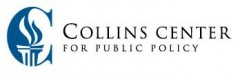

Collins Center for Public Policy, Inc.

Website:
http://www.collinscenter.org/ Location:
Miami, FL
The Collins Center, named in honor of Governor LeRoy Collins (served 1955 – 1961), was established in 1988 as a statewide nonprofit organization to seek out creative, non-partisan solutions to Florida’s toughest issues. Throughout our history, we have strived to uphold the principles maintained by Governor Collins– public and private integrity, deliberative democracy, environmental stewardship and economic fairness.
While we conduct comprehensive and quality public policy analysis, what makes the Collins Center unique is our desire to see changes in public policy implemented. To take an active role in putting these changes to the test. According to Collins Center president Rod Petrey, “We don’t just study problems and write position papers. We actually implement pilot projects and experimental programs to determine how our resolutions to problems will work. Then we’re able to share this information so others can use the knowledge.”
Since 1988, we have focused on many problems that have changed the lives of Floridians and impacted state policy.
We have heard Floridians speak with great passion about their voting rights and the importance of knowing their vote counted.
We have seen looks of relief on the faces of homeowners when they were able to reach a settlement with their insurance company following a life-threatening hurricane.
We have witnessed young men from Overtown give testimony before congressional representatives in Washington on the critical impact men’s health care has on low-income neighborhoods.
We have awarded small businesses and other organizations for new and creative ways to protect the environment while maintaining economic success.
We have received heart-felt thank you letters from people who received much needed medical attention through the efforts of our Community Health Workers.
We have worked in the Overtown community, just north of downtown Miami, to begin new development that will provide residents with new housing options, new job opportunities and a positive step toward returning this historic neighborhood to a vibrant community.
We have established a mortgage foreclosure mediation program to help resolve disputes between homeowners and their mortgage lenders, allowing many families to stay in their homes.
Supported Projects
Fundraising and Outreach
Loveta Wynn
7/2008 — 4/2009
Vista description is to manage the volunteer committee, coordinate community technology events such as graduations, parties, and meetings. Also do a quarterly press release, a monthly community technology newsletter, create flyers and brochures and a community resource guide.
Loveta coordinated the summer CTC graduation and the winter CTC graduation. Gathered volunteers to get the place and stage ready. Loveta organized and managed the fall Thanksgiving raffle to get internet reconnected at YETEC. Vista has recreated the infrastructure by teaching us how to use resources our organization already has. By making the average printer into a two sided copy machine. Creating brochures and making flyer and necessary forms for on-goin tech support. Loveta also created a community needs assesment check list from scratch and has done 5 site visits with hopes of finding grant related solutions. Loveta started a grassroots community technology newsletter thats is issued monthly with updated resources and digtal media news, manage volunteers, and bring a since of hope and committment to the Little Haiti community. January 2009 the internet was restored and students from the tech school helped with the fundraiser.
Loveta is dedicated determined to help those in need. Loveta organizes our center and takes the initiative to get project started and completed. Loveta also has brought many volunteers to our center who participate in our discounted tech support program.
Program and Policy Assistant
Victoria Edwards
6/2007 — 6/2008
Program and Policy Assistants (2) will work continue to with the Community Technology Initiative to build community technology-related capacity across the South Florida region via policy, planning and program development. The following activities are proposed:
1. Update and maintain zip code searchable database system for community technology access throughout the region. The system maps all community technology programs in the tri-county region with a database of detailed information for each and is searchable by zip code or keyword. The database system is useful for increasing technology access for those impacted by the digital divide, for those that work with them via other programs, and their advocates.
2. Provide technology and resource development related technical assistance to existing and start-up community technology programs in the tri-county region via an evolving co-op service model which will make access to hardware, software and services more cost effective for human services organizations. To include planning and start-up, discounted co-op tech services and software, technical advice, assistance with set-up and upgrading, matching of volunteers, assistance with grant writing, in-kind donation and fundraising strategies. Municipal broadband initiatives, faith based projects and community and school efforts may be targeted to help ensure maximal digital inclusion. Work with iCoast to develop a pool of volunteers and corporate in-kind donations.
3. Provide support/referral and assistance and/or become involved with cross community programs such as One Community, WiFi Miami Beach, the South Florida Regional Equitable Connection web portal, Elevate Miami and the eSeniors and eParks program, and others as they are identified or evolve.
4. Research sustainable best practices relevant to community technology in the South Florida region, including both local and national practices, to be distributed through written report and communications materials.
5. Assist with policy-related research and field activities relevant to community technology issues in the region, including home and after-school technology use by students and other topics.
6. Host quarterly meetings of the Technology Access Coalition (TAC), to bring together agencies and organizations providing community technology programming or interested in the issue. TAC may be renamed by the group.
7. Participate in other related capacity and consensus building activities as feasible.
Victoria was responsible for developing a new co-op model for building capacity in CTC’s, collaborating with partner agency to address hardware and software needs, recruiting volunteers to sustain co-op members and new VISTA’s for the project, conducting community relations and exhibiting at events, and developing conferences for the community technology field.
CTI used its previous mapping of CTC’s to target seven organizations to support through the co-op. Victoria conducted TechAtlas assessments for each organization and used these sophisticated assessment tools to determine how to allocate different resources. These accounts identified technical weaknesses in each CTC through the basic assessments, and also illustrated the technical, staffing and funding nuts and bolts behind running a CTC for program directors. This information was given to the program directors, and after the initial assessment CTI helped develop a comprehensive Technology Plan of Action based around Tech Atlas recommendations and the CTC’s own mission statement and priorities. Victoria recruited volunteers to deal with specific problems that Tech Atlas had identified.
“The most illustrative story [regarding the project’s impact] is that InternetCoast asked Victoria if she would be willing to coordinate their own program activities, and together we developed a jointly funded position for 2008-09 that will enable Victoria to coordinate the work of nonprofit and for-profit technology sectors, and to better develop linkages between the two.”
- Mark Needle, supervisor
Outreach and Volunteer Coordinator
Victoria Edwards
6/2007 — 6/2008
Victoria was responsible for developing a new co-op model for building capacity in CTC’s, collaborating with partner agency to address hardware and software needs, recruiting volunteers to sustain co-op members and new VISTA’s for the project, conducting community relations and exhibiting at events, and developing conferences for the community technology field. CTI used its previous mapping of CTC’s to target seven organizations to support through the co-op. Victoria conducted TechAtlas assessments for each organization and used these sophisticated assessment tools to determine how to allocate different resources. These accounts identified technical weaknesses in each CTC through the basic assessments, and also illustrated the technical, staffing and funding nuts and bolts behind running a CTC for program directors. This information was given to the program directors, and after the initial assessment CTI helped develop a comprehensive Technology Plan of Action based around Tech Atlas recommendations and the CTC’s own mission statement and priorities. Victoria recruited volunteers to deal with specific problems that Tech Atlas had identified.
Two conferences were organized to serve the funding, advocacy, and planning needs of nonprofit technology organizations (Jan. and June 08). The conferences established a platform for joint advocacy and inter-agency relations for nonprofits, positioning them in relation to the Donor’s Forum, Knight Foundation, and related initiatives such as OneCommunity and Florida 2.0. Through the conferences and community relations, positive relations were established and maintained with key partners such as InternetCoast, OneCommunity, and Florida 2.0. Through the co-op Victoria helped to establish a new CTC lab (Hialeah Gardens), strengthen existing programs, increase communication and collaboration between participants. Assessments were conducted with Crossfire, Cutler Bay Parks and Recreation, Inner City Youth, Center for Independent Living, WeCount (Cutler Bay), WeCount (Homestead) and the North Miami Beach Intel Clubhouse. Volunteers were recruited through Refresh Miami meetings and various online sources, and the first volunteer orientation took place in June 08. These activities were the culmination of planning and outreach that began in November 07, when the co-op strategy was initially developed. As a result of positive progress on these fronts, Victoria was hired by Collins Center to work jointly with the initiative and with InternetCoast.
CTC’s expressed appreciation and volunteered to write support letters for the project. Key partners likewise expressed appreciation for the work of the project and have made plans for ongoing collaboration. The most illustrative story is that InternetCoast asked Victoria if she would be willing to coordinate their own program activities, and together we developed a jointly funded position for 2008-09 that will enable Victoria to coordinate the work of nonprofit and for-profit technology sectors, and to better develop linkages between the two.
Website Development and Asset Mapping
Kevin Bulger
1/2007 — 1/2008
1) Update and maintain CTC asset mapping database.
2) Participate in providing technical support to the South Florida Regional Equitable Connection project.
3) Research on sustainable best practices relevant to community technology the South Florida region and written report.
4) Provide technical assistance to CTC’s in the region.
5) Conduct focus groups in low-income neighborhoods.
6) Assist with policy research activities.
7) Participate in other capacity and consensus building activities.
Kevin Bulger was responsible for very successfully assisting the technical and organizational development of the South Florida Regional Equity website with the co-supervision of a Collins Center staff. He assisted with the asset mapping of some 212 South Florida region community technology programs and access locations. He was also involved in policy and planning initiatives related to community efforts such as Wireless Miami Beach. Kevin assisted in writing grants for CTI and researched available grants. When Victoria Edwards began her service, additional grants were written and the asset mapping of agencies continued with the two VISTA’s working together on these projects. Meetings with agencies led to the development of the concept of creating memberships and co-op services to CTC’s and access projects in the region. Meetings have taken place with a number of community organizations to assist in securing and deploying volunteers as an element of co-op services. A conference event for 30 CTC’s and related organizations was organized in January 2008. Both VISTA’s have come up with some excellent and innovative ideas and concepts for the project, which would often be integrated into grants, or service concepts that have been incorporated into the co-op plan for CTC’s. It was decided to eliminate the work on focus groups to instead center efforts around working with provider agencies on the co-op services concept.
Kevin’s diverse organizational skills allowed him not only to help develop a web portal for equity resources (www.sflregionalequity.org), but encouraged the project director to involve him in a series of follow-up activities including newsletter and conference development. Following his service (ending late Jan.), his value is demonstrated by his being hired for part-time work by another hosted initiative operating under the Collins Center. While not all objectives were accomplished in the program year, Kevin’s ethic and value are further confirmed by his continuing part-time volunteerism on the project after his service has ended.
Policy, Planning and Program Development
Diego Barrera
1/2007 —
The VISTA will work with the Community Technology Initiative to build community technology-related capacity across the South Florida region via policy, planning and program development.
- Update, maintain, and promote zip code searchable database mapping system for community technology access throughout the region
- Provide support for the development of the South Florida Regional Equitable Connection web portal and provide outreach to local agencies to expand access to a wide array of resources
- Provide technical assistance and support to existing and emerging community technology programs
- Organize and document findings for a series of focus group discussions targeting potential or current end-users of community technology programs
- Research sustainable best practices relevant to community technology in the South Florida region.
- Assist with policy-related research and field activities relevant to community technology issues in the region.
- Where feasible, provide assistance with other policy and program development related to the initiative’s plan of work through activities that develop capacity and consensus building
Related Content
None created yet!